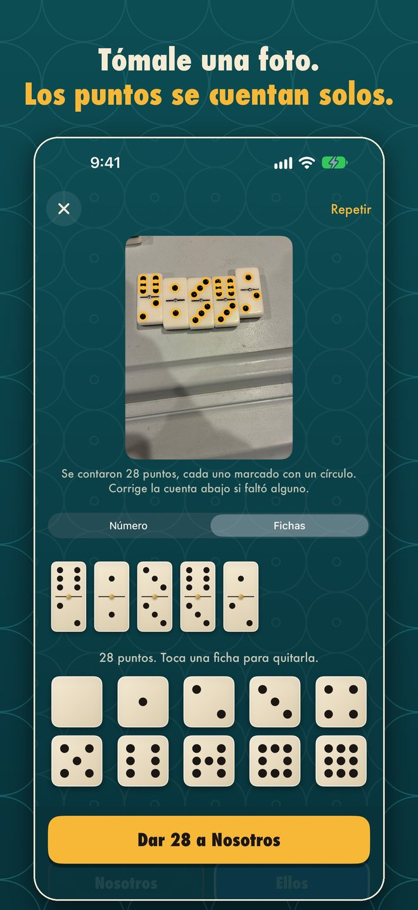
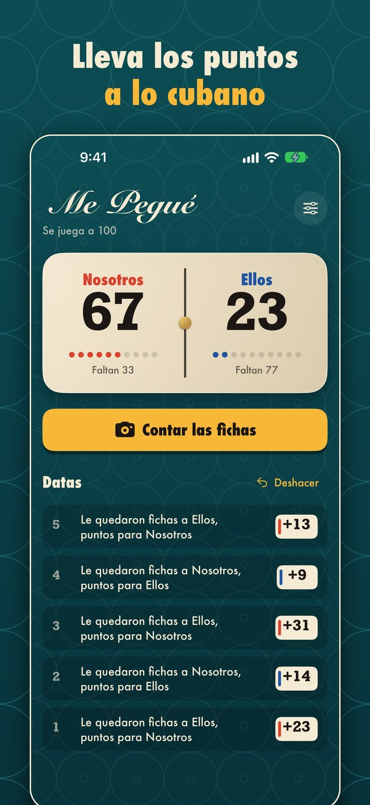
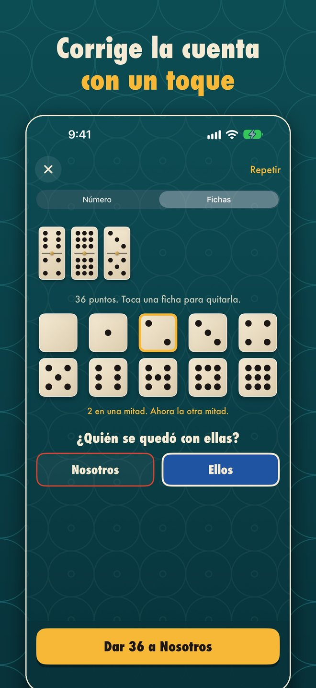
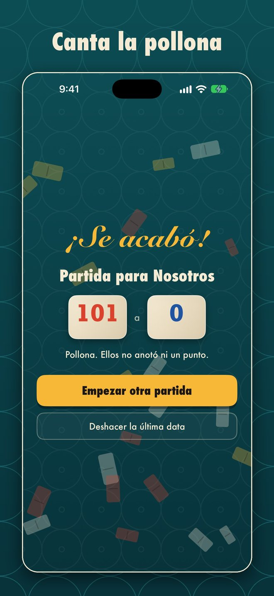

Me Pegué
El anotador de dominó que cuenta los puntos por ti.
Cuando termina una data, tómale una foto a las fichas que le quedaron al equipo perdedor. Me Pegué cuenta cada punto en tu teléfono y se los da al otro equipo.
- iPhone
- Español e inglés
- Sin cuenta
- Funciona sin internet
Cómo funciona
Tómale foto a las fichas
Pon las fichas que quedaron boca arriba y tómales una foto desde arriba.
Revisa la cuenta
Cada punto que la app contó queda marcado con un círculo en la foto, así un error se ve enseguida. Corrige el número con un toque si hace falta.
Da los puntos
Elige quién se quedó con las fichas y los puntos van para el otro equipo.
Un vistazo a la app




Hecho para la mesa de dominó
Cuenta con una foto
Cuenta los puntos automáticamente con visión por computadora que corre en tu teléfono.
Tú mandas
Corrige cualquier cuenta con un número o tocando las fichas que quedaron.
Se anota a lo cubano
Dos equipos, Nosotros y Ellos o los nombres que quieras. Se juega a 100, 150 o 200.
Doble nueve y doble seis
Funciona con los dos juegos de fichas.
Datas que se pueden deshacer
Cada data queda en la lista y la última se puede deshacer.
Pollona
La app la canta cuando el otro equipo no anota.
Ayuda y soporte
Respuestas a las preguntas más comunes. Si la tuya no está, escríbenos.
La cuenta salió mal. ¿Qué hago?
Toca menos o más para corregir el número, o cambia a Fichas y toca las fichas de la mano. No se anota nada hasta que tocas el botón amarillo.
Para que cuente mejor: pon las fichas boca arriba, toma la foto desde arriba y evita sombras fuertes y fotos movidas. Las fotos muy oscuras o borrosas son las que falla.
¿Con qué fichas funciona?
Con juegos doble nueve y doble seis de puntos.
¿Cómo cambio el idioma?
Abre los ajustes con el botón de controles del marcador y elige English, Español o el mismo idioma del teléfono.
¿Cómo corrijo los puntos después de dar la data?
Toca Deshacer para quitar la última data, o toca los puntos de un equipo para escribir el número correcto.
¿Dónde se guardan mis puntos?
Solo en tu teléfono. No hay cuenta y no se sube nada. Si borras la app, se borran los puntos.
¿Necesita internet?
No. Todo, incluso contar los puntos, pasa en tu teléfono.
¿Qué quiere decir "me pegué"?
Es lo que dice un jugador cubano al poner su última ficha y ganar la data.
Contacto
¿Preguntas, una foto que contó mal, o una idea? Escribe a mario [at] mariothemaker [dot] com.